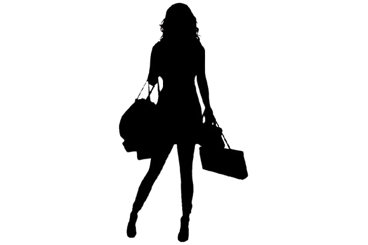

Historia de la moda
Prehistoria
Practicamente no hay restos de vestimenta en la prehistoria más antigua. En un principio los seres humanos se vestían para protegerse del frío, para ello utilizaban pieles de animales. Para coser las pieles usaban agujas que ellos mismos fabricaban con huesos.
Antiguedad
En las primeras civilizaciones, como Egipto, Mesopotamia y Grecia, se comenzaron a usar materiales más elaborados, como el lino, la lana y el algodón, para confeccionar prendas. Estas prendas comenzaron a ser utilizadas para expresar el estatus social y la jerarquía dentro de la sociedad.
Siglo XIX
La Revolución Industrial trajo consigo la producción en masa de prendas de vestir, lo que hizo que la moda fuera más accesible a la población en general. En el contingente europeo era habitual el uso de pelucas, así como de polvos y pomadas para blanquear el cabello. Los varones portaban tricornio, medias y calzones. La silueta femenina era artificiosa, gracias al empleo de miriñaques o tontillos, paniers, corsés y ballenas.
En México los textiles con los que se confeccionaba la ropa eran, en su gran mayoría, de algodón, manta, lana o lino. Por otro lado, las personas que podían darse el lujo de vestir prendas de Alta Costura traídas de Francia usaban telas como encajes o sedas.
Siglo XX
La moda a principios del siglo XX seguía siendo estricta, conservadora y centrada en lograr el "tipo de cuerpo ideal; más corsés, cuellos rígidos y mangas abullonadas con cinturas ajustadas, los peinados de aquella época se inspiraban en los dibujos a tinta de Charles Gibson, que personificaban la belleza estadounidense. Estos peinados consistían en moños suaves y voluminosos en la parte superior, con rizos y tirabuzones colgantes, estos estilos se mantuvieron constantes hasta mediados del siglo XX. Pero a mediados del siglo XX, el corsé con curva en S comenzó a consolidarse en la industria. Estos corsés empujaban el pecho hacia adelante y empujaban las caderas hacia atrás, creando una figura en forma de S. Los peinados de las mujeres también experimentaron una transformación. Las raya al medio y los bucles crearon un borde alrededor de la línea del cabello, facilitando su cuidado.
la moda experimentó grandes cambios, con la aparición de nuevos estilos, como el jazz, el rock and roll y el punk.
Actualidad
La moda se utiliza como una forma de exprecion, las tendencias se siguen y se crean. La Moda es dictada por características o tendencias que la mayoría de personas adoptan, que aunque van dirigidas a diferente segmentación de clientes hacen parte del llamado “sistema Moda”. Podemos entonces decir que una tendencia determinada está de moda, es decir, marca la parada en las tiendas, boutiques y nos predetermina en la elección de nuestras nuevas adquisiciones.